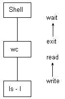

Теперь у нас есть достаточно материала, чтобы перейти к объяснению принципов работы командного процессора shell. Сам командный процессор намного сложнее, чем то, что мы о нем здесь будем излагать, однако взаимодействие процессов мы уже можем рассмотреть на примере реальной программы. На Рисунке 7.28 приведен фрагмент основного цикла программы shell, демонстрирующий асинхронное выполнение процессов, переназначение вывода и использование каналов.
Shell считывает командную строку из файла стандартного ввода и интерпретирует ее в соответствии с установленным набором правил. Дескрипторы файлов стандартного ввода и стандартного вывода, используемые регистрационным shell'ом, как правило, указывают на терминал, с которого пользователь регистрируется в системе (см. главу 10). Если shell узнает во введенной строке конструкцию собственного командного языка (например, одну из команд cd, for, while и т.п.), он исполняет команду своими силами, не прибегая к созданию новых процессов; в противном случае команда интерпретируется как имя исполняемого файла.
Командные строки простейшего вида содержат имя программы и несколько параметров, например:
who
grep -n include *.c
ls -l
Shell "ветвится" (fork) и порождает новый процесс, который и запускает программу, указанную пользователем в командной строке. Родительский процесс (shell) дожидается завершения потомка и повторяет цикл считывания следующей команды.
if (fork() == 0)
{
/* первая компонента командной строки */
close(stdout);
dup(fildes[1]);
close(fildes[1]);
close(fildes[0]);
/* стандартный вывод направляется в ка-
нал */
/* команду исполняет порожденный про-
цесс */
execlp(command1,command1,0);
}
/* вторая компонента командной строки */
close(stdin);
dup(fildes[0]);
close(fildes[0]);
close(fildes[1]);
/* стандартный ввод будет производиться из
канала */
}
execve(command2,command2,0);
}
/* с этого места продолжается выполнение родительского
* процесса...
* процесс-родитель ждет завершения выполнения потомка,
* если это вытекает из введенной строки
* /
if (amper == 0)
retid = wait(&status);
}
|
Рисунок 7.28. Основной цикл программы shell (продолжение)
Если процесс запускается асинхронно (на фоне основной программы), как в следующем примере
nroff -mm bigdocument &
shell анализирует наличие символа амперсанд (&) и заносит результат проверки во внутреннюю переменную amper. В конце основного цикла shell обращается к этой переменной и, если обнаруживает в ней признак наличия символа, не выполняет функцию wait, а тут же повторяет цикл считывания следующей команды.
Из рисунка видно, что процесс-потомок по завершении функции fork получает доступ к командной строке, принятой shell'ом. Для того, чтобы переадресовать стандартный вывод в файл, как в следующем примере
nroff -mm bigdocument > output
процесс-потомок создает файл вывода с указанным в командной строке именем; если файл не удается создать (например, не разрешен доступ к каталогу), процесс-потомок тут же завершается. В противном случае процесс-потомок закрывает старый файл стандартного вывода и переназначает с помощью функции dup дескриптор этого файла новому файлу. Старый дескриптор созданного файла закрывается и сохраняется для запускаемой программы. Подобным же образом shell переназначает и стандартный ввод и стандартный вывод ошибок.

Рисунок 7.29. Взаимосвязь между процессами, исполняющими командную строку ls -l|wc
Из приведенного текста программы видно, как shell обрабатывает командную строку, используя один канал. Допустим, что командная строка имеет вид:
ls -l|wc
После создания родительским процессом нового процесса процесс-потомок создает канал. Затем процесс-потомок создает свое ответвление; он и его потомок обрабатывают по одной компоненте командной строки. "Внучатый" процесс исполняет первую компоненту строки (ls): он собирается вести запись в канал, поэтому он закрывает старый файл стандартного вывода, передает его дескриптор каналу и закрывает старый дескриптор записи в канал, в котором (в дескрипторе) уже нет необходимости. Родитель (wc) "внучатого" процесса (ls) является потомком основного процесса, реализующего программу shell'а (см. Рисунок 7.29). Этот процесс (wc) закрывает свой файл стандартного ввода и передает его дескриптор каналу, в результате чего канал становится файлом стандартного ввода. Затем закрывается старый и уже не нужный дескриптор чтения из канала и исполняется вторая компонента командной строки. Оба порожденных процесса выполняются асинхронно, причем выход одного процесса поступает на вход другого. Тем временем основной процесс дожидается завершения своего потомка (wc), после чего продолжает свою обычную работу: по завершении процесса, выполняющего команду wc, вся командная строка является обработанной. Shell возвращается в цикл и считывает следующую командную строку.
Предыдущая глава || Оглавление || Следующая глава